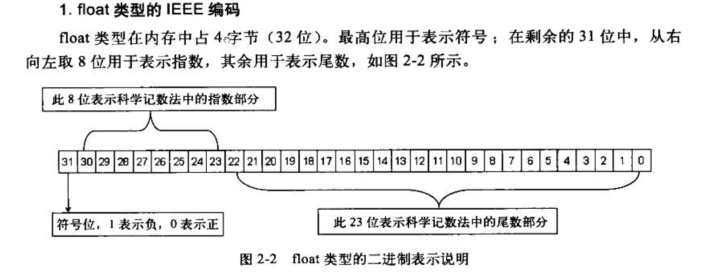

1.float类型的IEEE编码

在进行二进制转换前，需要对单精度浮点数进行科学计数法。例如，将float类型的12.25f转换成IEEE编码，需要12.25f转换成对应的二进制数1100.01，整数部分为1100，小数部分为01；小数点向左移动，每移动1次指数加1，移动到除符号位的最高位为1处，停止移动,这里移动3次。对12.25f进行科学计数法转换后二进制部分为1.10001，指数部分为3.在IEEE编码中，由于在二进制情况下最高位始终为1，为一个恒定值，故将其忽略不计。这里是一个整数，所以符号位添0。
12.25经转换后各位的情况：
- 符号位：0
- 指数位：十进制3+127，转换为二进制是10000010
- 尾数位：10001000000000000000000
由于尾数位中最高位为1是恒定值，故省略不计，只要转换回十进制时加1即可。为什么指数位要加127呢？由于指数可能出现负数，十进制数127可表示二进制数01111111.IEEE编码方式规定，当指数域小于01111111时为一个负数，反之为正数，因此01111111为0。
12.25f转换后的IEEE编码按照二进制拼接为01000001010001000000000000000000。转换成十六进制数为0x41440000，内存中以小尾方式排列，故为00 00 44 41。分析结果如下图所示：
上面演示了符号位为正，指数位也为正的情况。那么什么情况下指数为负呢？根据科学计数法，小数点向小数部分移动时，指数需要以0开始做减法。浮点数-0.125f转换为IEEE编码后，将会是一个符号位为1，指数部分为负的小数。-0.125f经转换后二进制部分为0.001，用科学计数法表示为1.0；指数部分为-3.-0.125fIEEE转换后各位的情况：
- 符号位：1
- 指数位：十进制127+(-3)，转换为二进制是01111100，如果不足为8位，则高位补0
- 尾数位：00000000000000000000000
-0.125f转换后的IEEE编码二进制拼接为10111110000000000000000000000000。转换成十六进制为0xBE000000，内存中显示为00 00 00 BE
上面的两个浮点数小数部分转换为二进制时都是有穷的，如果小数部分转换为二进制时得到一个无穷值，则会根据尾数部分的长度舍弃多余的部分。单精度数1.3f，小数部分转换为二进制就会产生无穷值，依次转换为：0.3、0.6、1.2、0.4、0.8、1.6、0.4、0.8…转换后得到的二进制数为1.01001100110011001100110，到23位终止，尾数部分无法保存更大的值。1.3f经IEEE转换后各位的情况：
- 符号位：0
- 指数位：十进制0+127，转换二进制01111111
- 尾数位：01001100110011001100110
1.3f转换后的IEEE编码二进制拼接为00111111101001100110011001100110。转换成十六进制为0x3FA66666，内存中显示为66 66 A6 3F。由于在转换二进制过程中产生了无穷值，舍弃了部分位数，所以进行IEEE编码转换得到的是一个近似值，存在一定误差。再次将这个IEEE编码转换成十进制小数，得到的值为1.2516582，四舍五入后为1.3。这就解释了为什么C++在比较浮点数值是否为0时，要做一个区间比较而不是直接进行等值比较。
正确浮点数比较的代码如下图所示：1
2
3
4
5float fTemp = 0.0001f;
if (fFloat >= -fTemp && fFloat <= fTemp)
{
//fTemp等于0
}
2.double类型的IEEE编码
double类型和float类型大同小异，只是double类型表示的范围更大，占用空间更多，是float类型所占用空间的两倍。当然，精准度也会更高。
double类型占8字节的内存空间，同样，高位也用于表示符号，指数位占11位，剩余42位用于表示位数。
在float中，指数范围用8位表示，加127后用于判断指数符号。在double中，由于扩大了精度，因此指数范围使用11位正数表示，加1023后可用于指数符号判断。
double类型的IEEE编码转换过程与float类型一样，可根据float类型的转换流程来转换double类型。